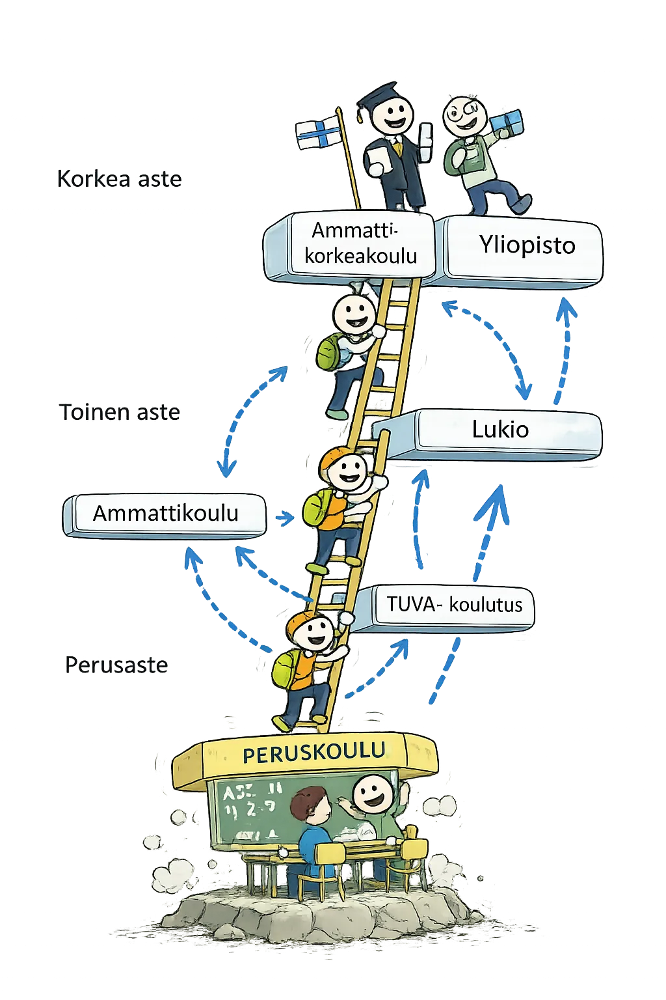
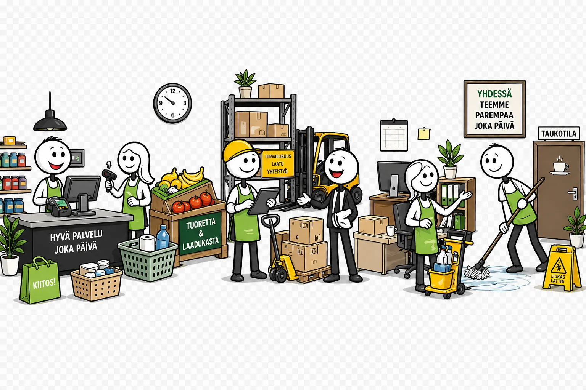

8. luokka – suunta löytyy
Tänä vuonna otat suunnan
Et tiedä vielä minne — mutta alat selvittää sitä.
Tänä vuonna tutustut koulutusaloihin ja alat hahmottaa, mikä sinua kiinnostaa — ja miksi. Ei tarvitse tietää vielä. Mutta tänä vuonna suunta alkaa löytyä.
Suomen koulutusjärjestelmä
Mitä vaihtoehtoja sulla on peruskoulun jälkeen?
Suomessa voit valita erilaisia polkuja peruskoulun jälkeen. Lukio, ammatillinen koulutus ja muut vaihtoehdot tarjoavat eri tapoja oppia ja kehittyä.
Ei ole vain yhtä oikeaa reittiä.
Tiedätkö jo, haluatko enemmän oppia tekemällä vai lukemalla laajasti eri aineita?

Tutustu koulutusaloihin
Klikkaa kuvaa suurentaaksesi sen koko näytölle.
Löysitkö kiinnostavan alan?
Tutustu seuraavaksi tutkintoihin ja lukiolinjoihin tarkemmin — valitse Amispolku tai Lukiopolku alta.
Oma reitti löytyy tutkimalla
Tutki ennen kuin valitset — voit tutkia molempia polkuja
Tehtävä sisältää kaksi polkua, joita oppilas tutkii omien kiinnostustensa mukaan:
- Amispolku — oppilas tutkii ammatillisia tutkintoja, tutustuu kouluarkeen ja ammattilaisen työpäivään, ja tekee interaktiivisen pelitehtävän oman alansa mukaan. Palautus Classroomiin.
- Lukiopolku — oppilas tutkii lukiolinjoja ja erikoislukioita, tutustuu lukioarjen tarinoihin ja jatko-opintovaihtoehtoihin, ja laatii oman lukiosuunnitelman. Palautus Classroomiin.
Oppilas etenee omassa polussa oman etenemisjärjestyksensä mukaan. Molempia polkuja voi käyttää saman tunnin aikana.
Ammatillisessa koulutuksessa opit tekemällä. Valitse kiinnostava aihe ja katso, mitä tutkintoja on tarjolla.
🎯 Mitä teet tässä tehtävässä?
- Valitset kiinnostavan alan ja tutustut ammatillisiin tutkintoihin (Vaihe 1)
- Kurkistat ammatillisen koulun arkeen ja ammattilaisen työpäivään (Vaihe 2)
- Teet oman alasi interaktiivisen tehtävän (Vaihe 3)
- Palautat tehtävän Classroomiin
- Valitse kiinnostuksesi
- Kurkista kouluarkeen & työpäivään
- Tee alan tehtävä
Vaihe 1Kiinnostaa minua
Kaikki tutkinnot
Ei tuloksia valituilla kiinnostuksilla.
Vaihe 2Kurkista kouluarkeen ja ammattilaisen työpäivään
Tutustu kahteen kokonaisuuteen järjestyksessä — ja kuittaa jokainen kun olet valmis.
Koulutussopimus
Opiskellet koulussa ja käyt harjoittelussa työpaikalla. Yleisin tapa. Saat opintotukea.
Oppisopimus
Opiskellet pääosin töissä. Työnantaja maksaa sinulle palkkaa. Edellyttää, että sinulla on työpaikka valmiina.
📚 Amissakin on "kouluaineita" — YTO-aineet
Ammatillisiin opintoihin kuuluu pakollisia yleissivistäviä aineita:
Käytännön harjoittelu
Pajassa, keittiössä tai hoitoympäristössä — teet oikeita töitä ohjatusti.
Työssäoppiminen
Olet oikealla työpaikalla viikkoja kerrallaan. Se on usein paras osa amisesta.
Näytöt — ei kokeita
Et kirjoita yo-kirjoituksia. Näytät osaamisen tekemällä oikeita töitä.
Essi, lähihoitajaopiskelija
Työssäoppimisjakso vanhainkodilla.
Aamupalat ja lääkkeet
Essi auttaa asukkaita heräämisessä. Ohjaaja valvoo lääkkeiden jakoa.
Ulkoilu
Essi vie ryhmän pihalle. Hän juttelee asukkaiden kanssa — tämä on päivän parasta aikaa.
Palaute ohjaajalta
"Tänään yksi asukas kiitti minua. Se riitti." — Essi
Mikael, kokkiopiskelija
Harjoittelujakso ravintolassa.
Esivalmistelu
Vihannesten pilkkominen, kastikkeiden valmistus. Keittiössä on oma rytminsä.
Lounasvuoro
Kiire, lämpö, tiimityö. "En pysty ajattelemaan muuta kuin tätä hetkeä." — Mikael
Uusi taito
Päivä päättyy yhteen uuteen tekniikkaan. Tänään: erityinen hienopilkkomistekniikka.
Sara, ICT-opiskelija
IT-tukiharjoittelu yrityksessä.
IT-tukipyynnöt
Sara käy läpi tukipyyntölistansa: mikä ongelma pitää ratkaista ensin?
Uusien koneiden asennus
Kolme uutta kannettavaa asennetaan verkkoon. Sara tekee osan itse ohjaajan valvonnassa.
Dokumentointi
"Se fiilis kun ongelma ratkeaa." — Sara
Leo, sähköasentajaopiskelija
Työssäoppiminen rakennustyömaalla.
Aloituspalaveri
Työmaan mestari kertoo päivän tehtävät. Leo saa oman osion asennettavaksi ohjaajan kanssa.
Kaapelointi
Leo vetää sähkökaapeleita uuteen kerrostalohuoneistoon. Tarkkuus ratkaisee — virheitä ei saa tehdä.
Mittaukset ja tarkistus
Jokainen asennus mitataan ennen kuin se hyväksytään. Leo oppii lukemaan yleismittaria.
Päivä pakattuna
"Kun valot syttyvät ensimmäistä kertaa — se on paras tunne." — Leo
Roosa, ympäristönhoitajaopiskelija
Harjoittelu kaupungin viheralueilla.
Puiston kunnostus
Roosa leikkaa pensaita ja istuttaa kesäkukkia. Jokaiselle kasville on oma paikkansa valotarpeen mukaan.
Luontokartoitus
Ohjaaja opettaa tunnistamaan kasvilajeja maastossa. Roosa löytää harvinaisen sammallajin.
Konetyöt
Roosa saa ajaa ruohonleikkuria ensimmäistä kertaa. Isot alueet vaativat suunnittelua.
Päivä ulkona
"En haluaisi olla missään muualla kuin täällä luonnossa." — Roosa
Noa, artesaaniopiskelija
Puupajapäivä oppilaitoksessa.
Suunnittelu
Noa piirtää mittakuvan omasta projektistaan: pienestä kirjahyllystä. Mitoitus on tehtävä ennen sahaamista.
Paja
Sahaukset, hionnat, liimaukset. Kädet tekevät — silmät tarkistavat. Virhe huomataan vasta liimauksen jälkeen.
Pintakäsittely
Noa kokeilee eri petsejä ja maaleja. Väri muuttaa tunnelman täysin.
Valmis työ
"Kun se on valmis ja pidät sen käsissä — ei voi selittää, miltä se tuntuu." — Noa
Aada, merkonomiopiskelija
Harjoittelu vaateliikkeessä.
Avaus ja somistus
Aada järjestää uuden malliston esille. Esillepano on puolet myynnistä.
Asiakaspalvelu
Aada auttaa asiakasta löytämään oikean koon ja tyylin. Kysyminen on tärkeämpää kuin myyminen.
Varastotyöt
Uusi toimitus saapuu. Aada tarkistaa, merkkaa ja vie hyllyttää.
Kassan sulku
"Tykkään siitä, kun asiakas lähtee hymyillen." — Aada
Juho, liikunnanohjaajopiskelija
Harjoittelu kuntosalilla ja koulussa.
Aamutunti
Juho vetää aamujumpan kuntosalin asiakkaille. Ohjaaja seuraa sivusta ja antaa palautetta jälkeen.
Henkilökohtainen ohjaus
Juho tekee aloittelijan kanssa harjoitusohjelman. Kuuntelu on tärkeintä: mikä on tavoite, mikä pelottaa?
Koululaisten liikuntatunti
Juho ohjaa 5.-luokkalaisia. Hullun hauskaa — ja vaativaa samanaikaisesti.
Oma treeni
"Työ on liikkumista. Se ei lopu kun kello lyö." — Juho
LisätietoErityisammattioppilaitokset
Jos tarvitset enemmän tukea opiskelussa, erityisammattioppilaitokset tarjoavat saman ammatillisen koulutuksen — pienemmissä ryhmissä ja yksilöllisemmin. Haetaan samassa yhteishaussa opintopolku.fi:ssä.
Aitoon koulutuskeskus
Pälkäne ja Tampere. Valmentava koulutus ja ammatilliset perustutkinnot opiskelijoille, jotka tarvitsevat enemmän tukea.
www.aikk.fi →Ammattiopisto Live
Pääkaupunkiseutu. Pääkaupunkiseudun suurin ammatillinen erityisoppilaitos, noin 1 900 opiskelijaa vuosittain.
www.livesaatio.fi →Ammattiopisto Luovi
Valtakunnallinen, yli 30 paikkakuntaa. 18 eri ammatillista perustutkintoa sekä TUVA ja TELMA (valmentavat koulutukset).
www.luovi.fi →Ammattiopisto Spesia
Jyväskylä, Järvenpää, Pieksämäki ja Turku — yhteensä 12 paikkakunnalla, yli 1 500 opiskelijaa.
www.spesia.fi →Kiipulan ammattiopisto
Janakkala, Hämeenlinna, Lahti, Nokia — 10 paikkakuntaa. Yksilöllinen koulutus ja tuettu asuminen.
www.kiipula.fi →Optima
Pohjanmaa ja Etelä-Suomi. Ruotsinkielinen oppilaitos opiskelijoille, jotka tarvitsevat enemmän tukea opiskelussa.
www.optimaedu.fi →Vaihe 3🎮 Tee alan tehtävä
Tarkista ajankohtaiset tiedot Opintopolku.fi-sivuilta.
👆 Valitse Vaihe 1:ssä jokin kiinnostava ala — sopiva ammattitilanne ilmestyy tähän automaattisesti.
✅ Hyvä työ!
Olet nyt tutustunut ammatillisiin tutkintoihin ja saanut kuvan siitä, miltä ammattikoulu näyttää arjessa.
💡 Muistutus: tallenna vastauksesi ja lähetä ne opettajalle Classroomin kautta.
🔍 Haluatko tutkia lisää? Katso eri tutkintoja opintopolku.fi:stä.
🃏 Ennen kuin syvennyt yhteen polkuun — testaa, tunnetko koulutusalat ylipäänsä?
Sisältää pelin kuvauksen, oppimistavoitteet, aikataulusuosituksen (10–20 min), pisteytyksen selityksen, eriyttämisideat sekä kytkennät muihin osioihin.
🌍 Maailma tarvitsee sinua
Valitse ryhmälle ongelma, kokoa unelmatyöryhmä eri aloilta ja suunnitelkaa yhdessä ratkaisu.
Sisältää oppimistavoitteet, aikataulusuosituksen (35–45 min), vaiheistetunohjauksen, toteutusvinkit, arviointikriteerit, eriyttämisideat sekä tulostettavat rooli- ja skenaariot. Avaa selaimessa ja tulosta tarvittaessa.
Mitä osaan – mitä haluan?
Vahvuudet ja kiinnostukset ohjaavat valintoja.
Vahvuudet eivät aina ole ilmeisiä.
Kaksi tehtävää auttavat löytämään ne.
📱 Fake Insta
Luo paperille someprofiiili, jonka kaikki sisältö ovat sinun vahvuutesi. Parisi toimii somemanagerinasi ja auttaa löytämään ne.
Luo oma vahvuuskartta: kirjoita itsellesi tärkeät vahvuudet, mihin tilanteisiin ne sopivat ja missä haluaisit kehittyä. Perustele jokainen valinta yhdellä konkreettisella esimerkillä omasta elämästäsi.
💡 Vinkki: Pohdi myös ns. piilossa olevia vahvuuksia — asioita, jotka sujuvat sinulta niin luontevasti, ettet edes huomaa niitä
Sisältää oppimistavoitteet, vaiheistetun ohjauksen (yksin → pari → profiili), aikataulusuosituksen (25 min), vinkit somemanageri-rooliin ja eriyttämisideat.
Kurkistus työelämään
Millaista työ oikeasti on?
TET-jakso on mahdollisuus nähdä työelämää oikeasti. Saat kokemusta, opit uutta ja huomaat, mikä kiinnostaa – tai ei.
Kokemus auttaa valinnoissa.

Näin TET-harjoittelu etenee – klikkaa vaihetta nähdäksesi lisätietoja:
1. Koulu antaa työsopimuslomakkeen
Ennen TET-harjoittelua oppilas saa opolta tyhjän työsopimuslomakkeen. Lomake on virallinen asiakirja, joka pitää toimittaa tulevalle TET-työpaikalle.
📋 Pidä lomake tallessa ja siistinä!
2. Oppilas käy kysymässä TET-paikkaa
Oppilas menee lomakkeen kanssa haluamiinsa työpaikkoihin ja kysyy: „Voinko päästä teille TETtiin?"
- Jos vastaus on kyllä → siirry seuraavaan vaiheeseen
- Jos vastaus on ei → kokeile seuraavaa työpaikkaa
💡 Älä lannistu – useimmat löytävät paikan muutaman yrityksen jälkeen!
3. Työnantaja täyttää lomakkeen
Kun työnantaja suostuu, hän täyttää työsopimuslomakkeen ja allekirjoittaa sen. Oppilas saa täytetyn lomakkeen itselleen.
Oppilas vie lomakkeen opolle mahdollisimman pian.
📄 Asiakirja: työsopimuslomake (täytetty) → toimitetaan opolle
4. Opo säilyttää – ja palauttaa ennen TETiä
Opo ottaa sopimuksen talteen ja tarkistaa sen. Vähän ennen TET-viikon alkua opo antaa sopimuksen oppilaalle takaisin.
Tarvittaessa opo antaa myös matkaliput TET-paikkaan kulkemista varten.
🎫 Muista: kysy opolta matkaliput jos tarvitset!
5. TET-harjoitteluviikko
Oppilas menee TET-paikkaan työsopimuksen ja mahdollisten matkalippujen kanssa. Harjoittelu alkaa!
💼 Tee töitä ahkerasti, ole ajoissa ja käyttäydy asiallisesti.
6. Työtodistus opolle
TET-harjoittelun päätyttyä työnantaja kirjoittaa oppilaalle työtodistuksen. Oppilas toimittaa työtodistuksen opolle.
🏅 TET-harjoittelu on nyt suoritettu – hienoa työtä!
🎰 Pyörä pyörii – satunnainen ura
Saat satunnaisen, harvinaisen ammatin. Sinulla on 3 minuuttia valmistautua – ja sitten vakuutat muut täydellä vakavuudella, miksi se on täydellinen juuri sinulle.
🧑💻 Oppimaan oppimisen klinikka
Mikä opiskelussa tyssää? Valitse aihe ja kulje polku läpi.
🧭 Kulku: valitse aihe → vastaa → valitse keino → kirjoita oppimisen avain
📎 Palautus: lataa oppimisresepti.txt → Classroom
💡 Vinkki: voit käydä useamman aiheen läpi
Mitä jos? - tulevaisuustuumailua
Tulevaisuus alkaa yhdestä kysymyksestä.
Suurin osa töistä, joihin sinä työllistyt, ei ole vielä olemassa. Kukaan ei tiedä tarkalleen, millainen maailma odottaa — ei tutkijat, ei opettajat, ei edes tekoäly.
Mutta se ei tarkoita, että tulevaisuus tapahtuu sinulle ilman sinua. Tällä oppitunnilla me kuvitellaan, rakennetaan ja pohditaan — mitä koulu voisi olla, millainen työpaikka sinua odottaa, ja kuka sinä olet siinä kaikessa.

Rakenna huomisen koulu
TiimityöMillainen koulu voisi olla — jos saisit päättää?
Tulevaisuuden koulu -esittely
LuokkatehtäväJokainen ryhmä esittelee oman koulunsa muulle luokalle.
- Esittelijä kertoo: missä koulu on ja miksi se on olemassa
- Luokka äänestää: mikä idea yllätti eniten?
- Yhteinen purku: mitä jokaisessa koulussa oli yhteistä?
⏱ Aika: 10–15 min
Tulevaisuuden työpaikka
Tulevaisuuden työpaikka -esittely
LuokkatehtäväJokainen ryhmä esittelee oman työpaikkansa — käy läpi neljä kohtaa, muut kuuntelevat ja äänestävät lopuksi.
- Tilanne: Mikä "Entäs jos" -kysymys teillä oli?
- Nimi & paikka: Mikä teidän työpaikka on ja missä se sijaitsee?
- Työ: Mitä siellä tehdään?
- Luokka äänestää: Mihin paikkaan haluaisit itse mennä töihin?
⏱ Aika: 10–15 min
Kirjoita koulutusjärjestelmän manifesti: mitkä kolme asiaa haluaisit ehdottomasti muuttaa nykyisessä koulussa, ja miksi? Perustele jokainen muutos oppimistutkimuksella tai omalla kokemuksella. Mitä hyötyä tai haittaa muutoksista voisi olla?
💡 Vinkki: Parhaat ideat syntyvät, kun pohdit sekä opiskelijan että opettajan näkökulmaa
Sisältää molemmat tehtävät (Tulevaisuuden koulu ja Tulevaisuuden työpaikka), oppimistavoitteet, aikataulusuosituksen (45 min tai 2 tuntia), vaiheistetun ohjauksen, palautusmuodot ja LEGO-vaihtoehdot, eriyttämisideat sekä kytkennät muihin osioihin.